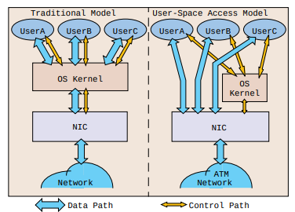

驱动是内核模块, 模块是抽象接口的实现, 驱动是某个接口的实现. 操作系统启动的时候通过 modprobe 加载驱动, 加载的时候调用驱动的注册函数, 把驱动里面相关的函数指针注册到某些钩子的观察者队列中去. 事件（中断）发生之后这些函数被调用.
从 ldd3 或 Monitoring and Tuning the Linux Networking Stack: Receiving Data 的描述来看, 接收数据是非常复杂的过程, 太多分支, 但如果只看网口到协议栈的过程就简单许多.
NIC 收到数据, 通过 DMA（如果 NIC 支持）将数据写入特定的地址空间

NIC 发出硬件中断, 告诉 CPU 数据已经准备好了, 与此硬件中断对应的 handler 检查驱动是否支持 NAPI, 如果支持, 唤醒 NAPI , NAPI 将自己注册到 CPU 的 softnet_data, 发出一个 NET_RX_SOFTIRQ, 并屏蔽硬件中断, 之后 NIC 的硬件中断再发过来也不会打断 CPU, 从而缓解 CPU 的压力.
/* Called with irq disabled */
static inline void ____napi_schedule(struct softnet_data *sd,
struct napi_struct *napi)
{
list_add_tail(&napi->poll_list, &sd->poll_list);
__raise_softirq_irqoff(NET_RX_SOFTIRQ);
}
如果驱动不支持 NAPI, 则直接调用驱动的 poll 函数.
以 igb 驱动为例, 新的 igb 支持 NAPI, igb_main.c igb_poll()就是 poll 接口的实现.
/* initialize NAPI */
/// 将 igb_poll 注册到 NAPI
netif_napi_add(adapter->netdev, &q_vector->napi,
igb_poll, 64);
推荐阅读 Monitoring and Tuning the Linux Networking Stack: Receiving Data 了解之后的细节.
题外话: 我的工作和设备驱动有些相关, 虽然我们没改过驱动, 但对某些问题需要提供一点驱动层面的解释. 所以这也是我研究设备驱动的原因之一, 后续将持续更新.